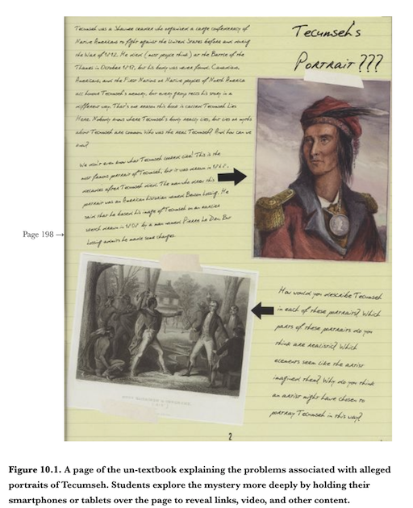

<!DOCTYPE html>
<html lang="en">
  <head>
    <meta charset="utf-8" />
    <meta name="viewport" content="width=device-width, initial-scale=1.0, maximum-scale=1.0, user-scalable=no" />

    <title></title>
    <link rel="stylesheet" href="dist/reveal.css" />
    <link rel="stylesheet" href="dist/theme/night.css" id="theme" />
    <link rel="stylesheet" href="plugin/highlight/zenburn.css" />
	<link rel="stylesheet" href="css/layout.css" />
	<link rel="stylesheet" href="plugin/customcontrols/style.css">


    <script defer src="dist/fontawesome/all.min.js"></script>

	<script type="text/javascript">
		var forgetPop = true;
		function onPopState(event) {
			if(forgetPop){
				forgetPop = false;
			} else {
				parent.postMessage(event.target.location.href, "app://obsidian.md");
			}
        }
		window.onpopstate = onPopState;
		window.onmessage = event => {
			if(event.data == "reload"){
				window.document.location.reload();
			}
			forgetPop = true;
		}

		function fitElements(){
			const itemsToFit = document.getElementsByClassName('fitText');
			for (const item in itemsToFit) {
				if (Object.hasOwnProperty.call(itemsToFit, item)) {
					var element = itemsToFit[item];
					fitElement(element,1, 1000);
					element.classList.remove('fitText');
				}
			}
		}

		function fitElement(element, start, end){

			let size = (end + start) / 2;
			element.style.fontSize = `${size}px`;

			if(Math.abs(start - end) < 1){
				while(element.scrollHeight > element.offsetHeight){
					size--;
					element.style.fontSize = `${size}px`;
				}
				return;
			}

			if(element.scrollHeight > element.offsetHeight){
				fitElement(element, start, size);
			} else {
				fitElement(element, size, end);
			}		
		}


		document.onreadystatechange = () => {
			fitElements();
			if (document.readyState === 'complete') {
				if (window.location.href.indexOf("?export") != -1){
					parent.postMessage(event.target.location.href, "app://obsidian.md");
				}
				if (window.location.href.indexOf("print-pdf") != -1){
					let stateCheck = setInterval(() => {
						clearInterval(stateCheck);
						window.print();
					}, 250);
				}
			}
	};


        </script>
  </head>
  <body>
    <div class="reveal">
      <div class="slides"><section  data-markdown><script type="text/template">
<!-- .slide: data-background-opacity="0.5" data-background-image="https://hist3812.netlify.app/images/illustrations/old-school-game-controller-vector.svg" -->

<div align="right">

### History Is A Remix

</div>

(sorry- my production values are less than their usual high level. It's been an intense few days)
</script></section><section  data-markdown><script type="text/template">
- note down the single most important idea from the two readings
- explain that idea 1 minute to someone beside you
- listen without interrupting
- then let them explain the idea they selected, listen without interruption
</script></section><section  data-markdown><script type="text/template">
- the student's remix of the newsreel: was this good history?

<aside class="notes"><ul>
<li><p>guy in class felt the music was too triumphal, stank of same propaganda as nazis</p>
</li>
<li><p>he remixed it with requiem by mozart; felt it was &#39;truer&#39;</p>
</li>
<li><p>students eventually felt the original was good if doing history, but the remix better for <em>teaching</em> history
kelly&#39;s argument - the student was making a historical argument by altering the source, he was making history by remixing</p>
</li>
</ul>
<ul>
<li>he was engaging in what&#39;s called &#39;transmedia storytelling&#39; - coined by Henry Jenkins, a narrative that spreads across different media - into stories that cross media, genres, activities</li>
</ul>
</aside></script></section><section  data-markdown><script type="text/template">
Transmedia Storytelling - Henry Jenkins, 2006
- cultural attractors
- cultural activators

<aside class="notes"><p>at the heart of Jenkin&#39;s concept of transmedia is the distinction between cultural attractors or works that draw like minded individuals together to form a community and cultural activators or works that give these communities something to do </p>
<ul>
<li>in museums, you get &#39;immersive multimedia experiences&#39;, but they often have trouble with getting the story aspect to work - they don&#39;t take idea of attractors and activators into account</li>
<li>one of the most powerful uses of transmedia storytelling was the fashion for alternate reality games in early 00s.</li>
<li>the key conceit of ARGS was another layer of reality that bled into our everyday reality; the invocation &#39;this is not a game&#39; was a signal that yes, yes it is!</li>
</ul>
</aside></script></section><section  data-markdown><script type="text/template">
Alternate Reality Games

<p style="line-height: 0" class="reset-paragraph image-paragraph"></img></p>


[Opening few minutes of this](https://www.youtube.com/watch?v=9-xsDF1zQZE)

<aside class="notes"><ul>
<li>the beast, from 2001, for the film A.I; I Love Bees - 2004 for release of Bungie&#39;s Halo 2. ... </li>
<li>these all required teams of designers and runners, and explicitly invoked magic circles! </li>
<li>kinda fallen out of fashion; unfortunately, life took on too many elements of ARGs - the idea that there was a magic circle dissolved because conditioned to disbelieve the &#39;other guys&#39;, to demonstrate loyalty to one side by explicitly denying reality. the stronger the reaction, the more obviously &#39;good&#39; it must be.</li>
<li>you can&#39;t play a game when you can&#39;t recognize non-game?</li>
</ul>
</aside></script></section><section  data-markdown><script type="text/template">
'we...present the evidence of that story, and let the palyers tell it to themselves'.

-Sean Stewart, one of the designers for _I Love Bees_

<aside class="notes"><p>almost an archaeological approach - but what people forget sometimes is that one needs archaeological theory to bridge the gap between evidence and story.</p>
</aside></script></section><section  data-markdown><script type="text/template">
“My name is Sophia,” it began. “I got your name off the UWO History website, and I was hoping you or your friends could help me.”

<aside class="notes"><p>In September 2011, in the first week of the new school year, about two dozen students in and around the Public History program at the University of Western Ontario received an unusual email. “My name is Sophia,” it began. “I got your name off the UWO History website, and I was hoping you or your friends could help me.” Most of the students deleted the email without a second thought, but a few followed the attached link to an even more unusual video. The video showed a man, dressed in a Napoleonic-era uniform, apparently locked in a small room. The man, identified only as Captain Smith, seemed to have no memory of how he got there, or indeed of any historical events from the last two hundred years. But he, too, asked for help</p>
</aside></script></section><section  data-markdown><script type="text/template">
<p style="line-height: 0" class="reset-paragraph image-paragraph"></img></p>


[full postmortem here](https://www.fulcrum.org/epubs/5q47rq179?locale=en#/6/34[Kee-0017]!/4/2[ch10]/2/2[p176]/1:0)

<aside class="notes"><ul>
<li><p>clues led to another website, then the university library, and in books about war of 1812 <em>that had never been signed out</em> they found scraps of paper with cryptic notes.</p>
</li>
<li><p>they uncovered a conspiracy, had to run around the city of London, graveyards, and uncover the central mystery: what happened to Shawnee war chief Tecumseh&#39;s body? (he died at the Battle of the Thames on Oct 5 1813.) - the stories that emerged afterwards speak to political and social concerns of the day. Tecumseh Lies Here &lt;- a dark pun.</p>
</li>
<li><p>took 4 months of planning, 1 month to run it; how replayable is something like this?</p>
</li>
<li><p>it took 7 people working day and night for a month to keep the game being played by 20 people (another dozen casual) going, making new content, fixing things, rushing to keep one step ahead of the players</p>
</li>
<li><p>compelling aspect: no obvious rules, directions, or parameters; leads to sense of immersion, paranoia!</p>
</li>
<li><p>final part of the game was a puzzle box that would only open if the players took it to the correct location - which happened to be in the middle of a living history museum during a reanctor&#39;s weekend.</p>
</li>
</ul>
</aside></script></section><section  data-markdown><script type="text/template">
How is this like the Last American Pirate?
</script></section><section  data-markdown><script type="text/template">
<split even>
<p style="line-height: 0" class="reset-paragraph image-paragraph"></img></p>


<p style="line-height: 0" class="reset-paragraph image-paragraph"></img></p>


</split>

threshold concepts: core ideas that transform perception of a subject

<aside class="notes"><ul>
<li><p>later iterations of Tecumseh Lies Here - goal was to teach history through <em>doing</em> history; in the context of the raw raw canada 1812 celebrations, nuanced discussions of Indigenous role in the fight, their betrayal etc etc not being discussed. they were fighting against the &#39;banal nationalism&#39; of the 1812 celebrations.</p>
</li>
<li><p>they tried to create a D&amp;D like version; ballooned to 30 000 words, never released.</p>
</li>
<li><p>they wanted to keep the idea that you learn history by doing history, so they identified 3 threshold concepts that they&#39;d design around. </p>
</li>
<li><p>in this case,
1 historians are detectives. 2 history is a conversation. 3 history itself has a history.</p>
</li>
<li><p>created an &#39;untextbook&#39; for middle school teachers to use. They made it look like the research notes of one of the paranoid conspiracy people from the alternate reality game; Captain Smith would appear talk them through key ideas; secret videos could be discovered, where Captain Smith would whisper, &#39;Someone is being left out of the history, your teacher isn&#39;t telling you everyting&#39; which&#39;d lead to secret links to missing pages of the untextbook.</p>
</li>
</ul>
</aside></script></section><section  data-markdown><script type="text/template">
Tecumseh Lies Here & the untextbook were both very successful, but not very sustainable or scalable.

Is that a strength or a weakness?
</script></section><section  data-markdown><script type="text/template">
Remixing happens all the time. 

Every remix is an argument.

Transmedia storytelling is also a kind of remix.
</script></section><section  data-markdown><script type="text/template">
## fodder for reflections:

what kinds of questions do historians ask, and how could these questions spark 'enchantment'?

are there some kinds of transmedia experiences more suited to enchantment than others?
</script></section><section  data-markdown><script type="text/template">
## fodder for reflections:

how does belanger's understanding of a 'game' intersect with the ideas discussed today?

what consitutes authentic experience in light of the 'threshold concepts' id'd by campeau and macdougall?

what are the threshold concepts of _this_ course?</script></section></div>
    </div>

    <script src="dist/reveal.js"></script>

    <script src="plugin/markdown/markdown.js"></script>
    <script src="plugin/highlight/highlight.js"></script>
    <script src="plugin/zoom/zoom.js"></script>
    <script src="plugin/notes/notes.js"></script>
    <script src="plugin/math/math.js"></script>
	<script src="plugin/mermaid/mermaid.js"></script>
	<script src="plugin/chart/chart.min.js"></script>
	<script src="plugin/chart/plugin.js"></script>
	<script src="plugin/menu/menu.js"></script>
	<script src="plugin/customcontrols/plugin.js"></script>

    <script>
      function extend() {
        var target = {};
        for (var i = 0; i < arguments.length; i++) {
          var source = arguments[i];
          for (var key in source) {
            if (source.hasOwnProperty(key)) {
              target[key] = source[key];
            }
          }
        }
        return target;
      }

	  function isLight(color) {
		let hex = color.replace('#', '');

		// convert #fff => #ffffff
		if(hex.length == 3){
			hex = `${hex[0]}${hex[0]}${hex[1]}${hex[1]}${hex[2]}${hex[2]}`;
		}

		const c_r = parseInt(hex.substr(0, 2), 16);
		const c_g = parseInt(hex.substr(2, 2), 16);
		const c_b = parseInt(hex.substr(4, 2), 16);
		const brightness = ((c_r * 299) + (c_g * 587) + (c_b * 114)) / 1000;
		return brightness > 155;
	}

	var bgColor = getComputedStyle(document.documentElement).getPropertyValue('--r-background-color').trim();

	if(isLight(bgColor)){
		document.body.classList.add('has-light-background');
	} else {
		document.body.classList.add('has-dark-background');
	}

      // default options to init reveal.js
      var defaultOptions = {
        controls: true,
        progress: true,
        history: true,
        center: true,
        transition: 'default', // none/fade/slide/convex/concave/zoom
        plugins: [
          RevealMarkdown,
          RevealHighlight,
          RevealZoom,
          RevealNotes,
          RevealMath.MathJax3,
		  RevealMermaid,
		  RevealChart,
		  RevealCustomControls,
		  RevealMenu,
        ],

		mathjax3: {
			mathjax: 'plugin/math/mathjax/tex-mml-chtml.js',
		},

		customcontrols: {
			controls: [
				{id: 'toggle-overview',
				title: 'Toggle overview (O)',
				icon: '<i class="fa fa-th"></i>',
				action: 'Reveal.toggleOverview();'
				},
			]
		},
		menu: {
			loadIcons: false
		}
      };

      // options from URL query string
      var queryOptions = Reveal().getQueryHash() || {};

      var options = extend(defaultOptions, {"width":960,"height":700,"margin":0.04,"controls":true,"progress":true,"slideNumber":true,"transition":"slide","transitionSpeed":"default"}, queryOptions);
    </script>

    <script>
      Reveal.initialize(options);
    </script>
  </body>
</html>
